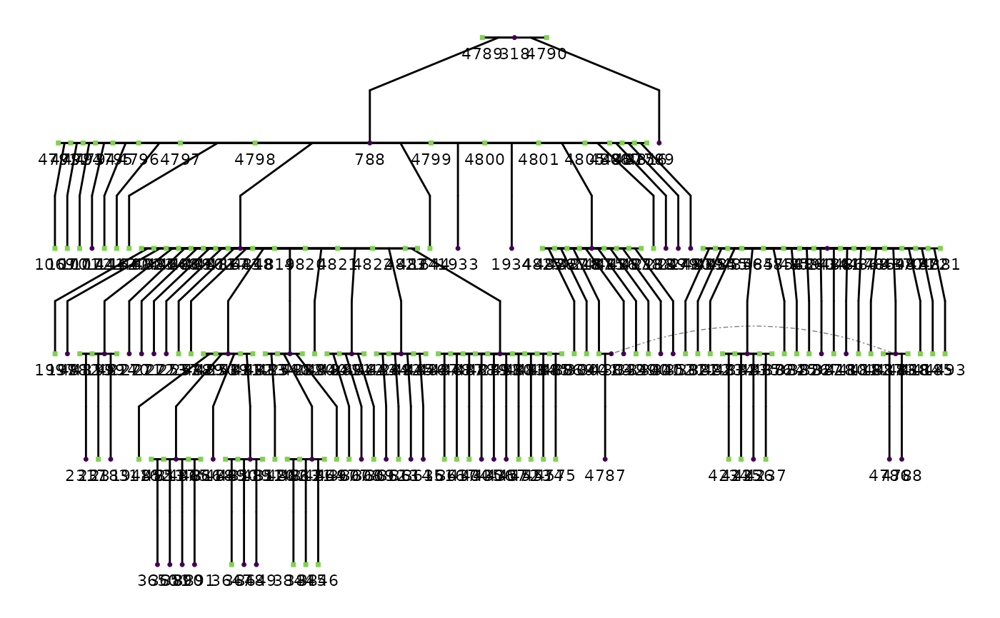

A tidy data frame of life‐history and reproductive metrics for 7,799 individual red squirrels from the Kluane Red Squirrel Project (1987–present).
Format
## `redsquirrels_full` A data frame with 7799 rows and 16 columns:
- personID
Unique identifier for each squirrel
- momID, dadID
Unique identifiers for each squirrel's parents
- sex
Biological sex of the squirrel
- famID
Unique identifier for each family. Derived from ped2fam
- byear
Birth year of the squirrel
- dyear
Death year of the squirrel
- lrs
lifetime reproductive success for the squirrel
- ars_mean
Mean annual reproductive success for the squirrel
- ars_max
Maximum ARS value for the squirrel
- ars_med
Median ARS value for the squirrel
- ars_min
Minimum ARS value for the squirrel
- ars_sd
Standard deviation of ARS values for the squirrel
- ars_n
Number of ARS values for the squirrel
- year_first
First year of ARS data for the squirrel
- year_last
Last year of ARS data for the squirrel
...
## `redsquirrels`
A data frame with 5251 rows and 16 columns:
A subset of redsquirrels_full intended for convenient analysis and examples.
(Same variables as redsquirrels_full, with fewer rows.)
An object of class tbl_df (inherits from tbl, data.frame) with 7799 rows and 16 columns.
Details
#' This package provides two related datasets:
redsquirrels_full: the complete dataset from the published sourceredsquirrels: a more workable subset derived fromredsquirrels_full
Each row corresponds to one squirrel with associated pedigree links and reproductive success summaries.
The original data are published under a CC0 1.0 Universal Public Domain Dedication:
McFarlane, S. Eryn; Boutin, Stan; Humphries, Murray M. et al. (2015). Data from: Very low levels of direct additive genetic variance in fitness and fitness components in a red squirrel population [Dataset]. Dryad. <https://doi.org/10.5061/dryad.n5q05>
Examples
# Load the red squirrels datasets
data(redsquirrels)
data(redsquirrels_full)
# View the structure of the dataset(s)
str(redsquirrels)
#> tibble [5,251 × 9] (S3: tbl_df/tbl/data.frame)
#> $ personID: num [1:5251] 8 11 13 51 58 59 72 184 200 201 ...
#> $ momID : int [1:5251] NA NA NA NA NA NA NA NA 58 58 ...
#> $ dadID : int [1:5251] NA NA NA NA NA NA NA NA NA NA ...
#> $ sex : chr [1:5251] "F" "F" "F" "F" ...
#> $ famID : num [1:5251] 8 8 8 8 8 8 8 8 8 8 ...
#> $ byear : int [1:5251] NA NA NA NA NA NA NA NA NA NA ...
#> $ dyear : num [1:5251] NA NA NA NA NA NA NA NA NA NA ...
#> $ lrs : int [1:5251] NA NA NA NA NA NA NA NA NA NA ...
#> $ ars_mean: num [1:5251] NA NA NA NA NA NA NA NA NA NA ...
str(redsquirrels_full)
#> tibble [7,799 × 16] (S3: tbl_df/tbl/data.frame)
#> $ personID : num [1:7799] 1 2 3 4 5 6 7 8 9 10 ...
#> $ momID : int [1:7799] NA NA NA NA NA NA NA NA NA NA ...
#> $ dadID : int [1:7799] NA NA NA NA NA NA NA NA NA NA ...
#> $ sex : chr [1:7799] "F" "F" "F" "F" ...
#> $ famID : num [1:7799] 1 2 3 4 5 6 7 8 9 10 ...
#> $ byear : int [1:7799] NA NA NA NA NA NA NA NA NA NA ...
#> $ dyear : num [1:7799] NA NA NA NA NA NA NA NA NA NA ...
#> $ lrs : int [1:7799] NA NA NA NA NA NA NA NA NA NA ...
#> $ ars_mean : num [1:7799] NA NA NA NA NA NA NA NA NA NA ...
#> $ ars_max : num [1:7799] NA NA NA NA NA NA NA NA NA NA ...
#> $ ars_med : num [1:7799] NA NA NA NA NA NA NA NA NA NA ...
#> $ ars_min : num [1:7799] NA NA NA NA NA NA NA NA NA NA ...
#> $ ars_sd : num [1:7799] NA NA NA NA NA NA NA NA NA NA ...
#> $ ars_n : num [1:7799] 0 0 0 0 0 0 0 0 0 0 ...
#> $ year_first: num [1:7799] NA NA NA NA NA NA NA NA NA NA ...
#> $ year_last : num [1:7799] NA NA NA NA NA NA NA NA NA NA ...
# Plot a pedigree for a single family
if (requireNamespace("ggplot2", quietly = TRUE)) {
# Select one family to plot
family_data <- subset(redsquirrels, famID == 160)
# Create a pedigree plot
ggPedigree(family_data,
personID = "personID",
momID = "momID",
dadID = "dadID",
sex = "sex",
config = list(
add_phantoms = TRUE,
code_male = "M"
)
)
}
#> REPAIR IN EARLY ALPHA
